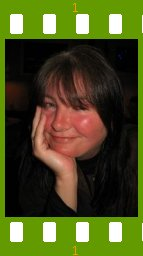
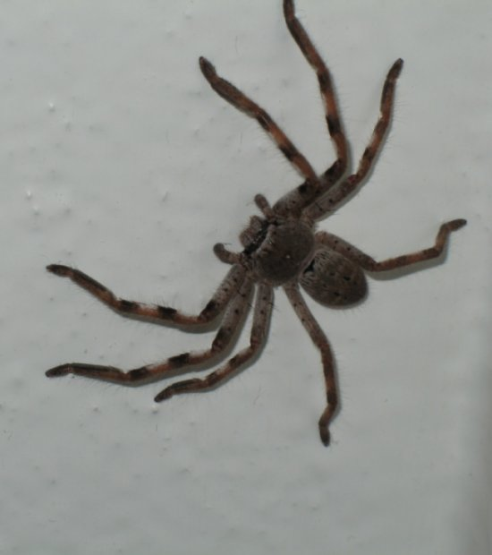

People of openSUSE: Edith Parzefall

Here are Edith Parzefall’s answers to the ‘People of openSUSE’ questions. Have a lot of fun…
- Nickname: emap
- Homepage: www.edith-parzefall.de
- Blog: No blog (yet?)
- Favorite season: Spring.
- Motto: Don’t worry, be happy.
Please introduce yourself!
I was born December 10, 1967, in Regensburg, a pretty, medieval town, a hundred kilometers south of Nuernberg. I studied German and American Studies, and made a futile attempt at computer science, at the same time. I spent half a year in Tacoma, Washington, as an exchange student. Since almost eight years now, I work for SUSE/Novell.
Tell us about the background to your computer use.
The first computer I actually owned was an Amiga 2000. Then I upgraded to an Amiga 3000 and was quite happy with it for many years, until…
When and why did you start using openSUSE/SUSE Linux?
… the power supply died just before I had to hand off my phD thesis, which I had written in LaTeX. So I completed it on a friend’s SUSE Linux 6.2 machine, while the power supply got repaired. The Amiga 3000 I donated for the 68K port of SuSE Linux and got myself a PC and installed SuSE Linux 6.3 on it.
When did you join the openSUSE community and what made you do that?
Shortly after the project was created. I still worked in the doc team and first thing we did was make the XML sources publicly available. Later, the “Lessons for Lizards” project was created to allow for a totally open contribution to our documentation.
In what way do you participate in the openSUSE project?
Mailing lists, IRC sometimes, testing, bug reports, feature requests, documentation, localization, proofreading…
What especially motivates you to participate in the openSUSE project?
openSUSE is simply the best distro and I think the community around it consists of great people really dedicated to improving it.
What do you think was your most important contribution to the openSUSE project/community or what is the contribution that you’re most proud of?
Making sure the YaST team got the time to refactor libZYPP for 10.3 and opening up YaST development to the community. The major part of the work there was done by Jiri Srain, though.
When do you usually spend time on the openSUSE project?
Mostly at work.
Three words to describe openSUSE? Or make up a proper slogan!
One size fits all. Unlike with socks, it really works with openSUSE.
What do you think is missing or underrated in the distribution or the project?
The project needs better marketing, while the distro needs better support for newbies. Left alone with it, they still feel rather insecure on a Linux machine.
What do you think the future holds for the openSUSE project?
Anything can happen. But I hope it will flourish, attract more people and get better with every release.
A person asks you why he/she should choose openSUSE instead of other distribution/OS. What would be your arguments to convince him/her to pick up openSUSE?
Hey, with this one I can help you. And it’s the best anyway. If you don’t believe me, go try other distros first.
Which members of the openSUSE community have you met in person?
Recently, Benji Weber and Francis Giannaros, more at last years Linux Kongress in Nuernberg, and of course the folks working for SUSE/Novell.
How many icons are currently on your desktop?
Let me check… four. I never use them, though.
What is the application you can’t live without? And why?
Emacs. If you have that one, you can do anything. ;-) Not that I know more than maybe ten percent of its functionality…
Which application or feature should be invented as soon as possible?
The “Do-what-I-want-without-asking-silly-questions” button. Customers have been screaming for it ever since the keyboard was invented. ;-)
Which is your preferred text editor? And why?
Emacs. See above.
Which famous person would you want to join the openSUSE community?
Terry Pratchett.
Which computer related skills would you like to have?
A green thumb: when ever I touch the thing, everything just works…
The Internet crashes for a whole week. How would you feel, what would you do?
I’d venture into the world and explore reality. Just in case I won’t like it, I’d bring a good book.
Which is your favorite movie scene?
The end of Thelma and Louise.
Star Trek or Star Wars?
Star Trek!
What is your favorite food and drink?
Food: Dampfnudeln (yeast dumplings steamed in milk, yum!) Drink: beer
Favorite game or console (in your childhood and nowadays)?
Childhood: Defender of the Crown Now: Frozen Bubbles
Which city would you like to visit?
Lhasa, maybe I works out next year.
What is your preferred way to spend your vacation?
Traveling, writing, or reading.
Someone gives you $1.000.000. What would you do with the money?
I’d take a year off and travel the world.
If traveling through time was possible, when would we be most likely to meet you?
Middle Ages.
There’s a thunderstorm outside. Do you turn off your computer?
Maybe, if it’s a really bad one. Then I’d go watch the clowds and the lightning from my balcony.
Have your ever missed an appointment because you forgot about it while sitting at your computer?
Uhm, yes, actually. It was a quite embarrassing, too, and that’s why I’m not going to tell you about it.
Show us a picture of something, you have always wanted to share!
Okay, you asked… Would you want to have one of those in your house?

You couldn’t live without…
Books.
Which question was the hardest to answer?
This one.
What other question would you like to answer? And what would you answer?
How about: What are you most afraid of?
Spiders.
But hey, I survived.